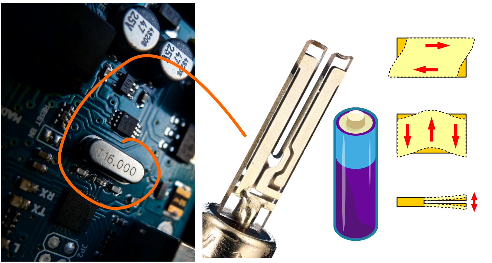
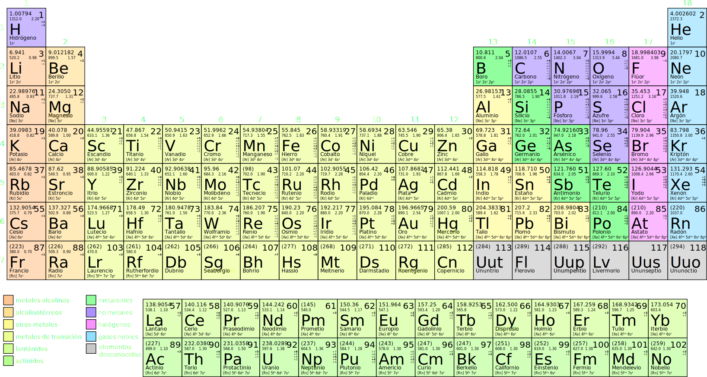
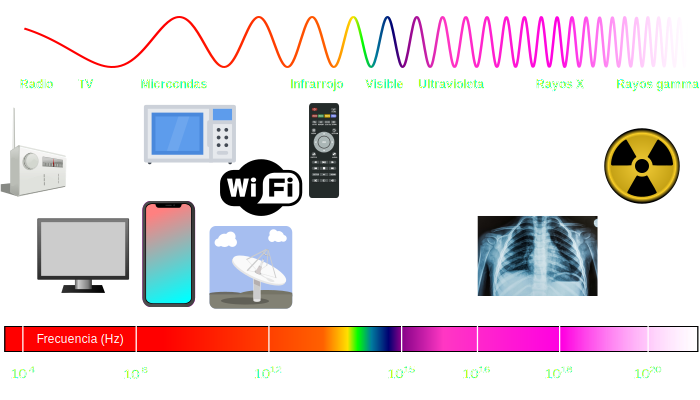

Tiempo, relojes, átomos y láseres
LIAF
IFIBA-DF-UBA
Láseres Moleculares
Citedef
Marcelo Luda
¿Cómo se mide el tiempo?
Un RELOJ consiste en:
- Fenómeno periódico (repetitivo)
- Estable
- Exacto
- Contar
Calendario

¿Cual es el fenómeno periódico?
Navegación
Relojes mecánicos
| Siglo XV | σ : 30 min / día | ∼ 800 km |
|---|---|---|
| Siglo XVIII | σ : 1 seg / día | ∼ 0,5 km |
Relojes de péndulo
Galileo ∼ 1637
Christiaan Huygens ∼ 1656
σ : 50 - 10 seg / día
Demostración
Péndulo simple
Péndulo simple
Relojes de péndulo

Trenes
Expansión de la red ferroviaria en Argentina
1913

Primer reloj en América
S. XVII - importado de Países bajos
Para tener control sobre una tecnología hay que saber cómo funciona
Problemas:
- ¿Cómo podemos tener osciladores idénticos?
- ¿Cómo podemos hacer que no les afecte el lugar donde están?
Relojes de cuarzo (cristal)
Átomos
Tabla periódica de los elementos


¿Donde están las oscilaciones en los átomos?

Interacción con luz
Demostración
Interacción con luz
Reloj atómico (Citedef)

Tipos de relojes atómicos


Trampa de iones para relojes ópticos (LIAF-UBA)


¿Para que queremos relojes tan precisos?
Aplicaciones